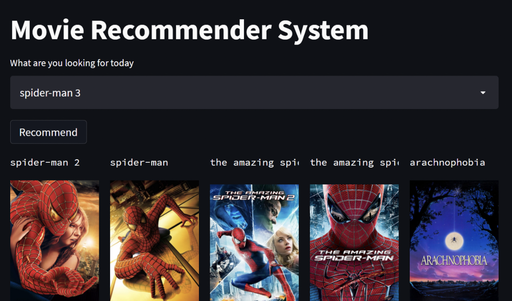

Magnes Motors
Network monitored Electric Go-Kart Charger and data logger

This product is a part of my summer internship at Magnes Motors. The PCB so designed is placed near the BMS of the electric Go-Kart. I have used ESP32 to connect to a local network from where commands and error can be logged remotely thus optimising the task of charging and debugging of the Go-karts.
Project consisted of two phases, Circuit and PCB desiging and another software programming of ESP32. Product uses FreeRTOS stack to maintain real time behaviour, as it has to cater to user commands from the network and monitor BMS for any error and provide warning at that instant.